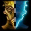
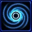

- Stats
- Abilities/Upgrades
- Strategy
- Lore
- Related
Armor: 2 |
 50/200 0.5625 per second
50/200 0.5625 per secondDamage: 6
Attacks: 6
Cooldown: 2.21
Targets: Ground and Air
Attack Range: 7
Acceleration: 1.375
Deceleration: 1
Collision Radius: 1.375
Requirements: Levels 2-3 requires Fleet Beacon
| Level |  Level 1 Level 1 |  Level 2 Level 2 |  Level 3 Level 3 |
| Minerals |  150 150 | 225 | 300 |
| Vespene Gas |  150 150 | 225 | 300 |
| Time |  160 160 | 190 | 220 |
| Damage Bonus | +1 | +2 | +3 |
| Total Damage | 7 (x6) | 8 (x6) | 9 (x6) |
400Vespene Cost:
400Supply:
 8
8Produced From: Nexus Build Time:
160Requirements: Fleet Beacon
Unit Type: Armored, Massive, Mechanical, Air
Requirements: Levels 2-3 requires Fleet Beacon
| Level |  Level 1 Level 1 |  Level 2 Level 2 |  Level 3 Level 3 |
| Minerals | 150 | 225 | 300 |
| Vespene Gas | 150 | 225 | 300 |
| Time | 160 | 190 | 220 |
| Armor Bonus | +1 | +2 | +3 |
| Total Armor | 3 | 4 | 5 |
Requirements: Levels 2-3 requires Twilight Council
| Level |  Level 1 Level 1 |  Level 2 Level 2 |  Level 3 Level 3 |
| Minerals | 150 | 225 | 300 |
| Vespene Gas | 150 | 225 | 300 |
| Time | 160 | 190 | 220 |
| Armor Bonus | +1 | +2 | +3 |
| Total Armor | 1 | 2 | 3 |
| Icon | Minerals | Vespene Gas | Research Time | Researched At |
|  | 0 | 0 | 0 | Already Researched |
Range: 5
Information: A Mothership has a passive cloaking field with a radius of 5.
This cloaks all allied units and structures, but not the Mothership itself.
| Icon | Minerals | Vespene Gas | Research Time | Researched At |
|  | 0 | 0 | 0 | Already Researched |
Range: 9
Radius: 2.5
Duration:
 20 100
20 100Information: When the Mothership uses this ability, all units (enemy or allied) are sucked into a vortex. This makes them invulnerable, but unable to do anything for the 20 second duration the Vortex is active.
Units inside a Vortex cannot be used or targeted until the Vortex expires.
A Mothership is not affected by its own Vortex, but an opponent Motership's Vortex will affect it.
As of patch 1.3.0, units that exit the Vortex are invulnerable for 1.5 seconds.
| Icon | Minerals | Vespene Gas | Research Time | Researched At |
| 0 | 0 | 0 | Already Researched |
Range: Entire Map
Radius: 6.5
Duration:
2 100Information: This spell can reach anywhere on the map. This allows the Protoss player to telport units from anywhere back to the Mothership.
It takes two seconds for the spell to fully activate and telport all the allied units in the radius where the spell was casted at.
If you have any suggestions for more strategies, go ahead and post on the forums 'here'!
Shift Queue Blinking
Sometimes when you have a large amount of stalkers, blinking can become more difficult and not all stalkers will end up where intended. A way to help this is to queue up a move command (to have the stalkers in range to blink), then the blink, and then another move command (to move the stalkers in front out of the way).
+1 Weapons vs Zerglings
Sum text about how gosu this is
+1 Weapons vs Zerglings
Sum text about how gosu this is
- Overview
General Information
Motherships are mighty protoss support vessels. At the heart of each mothership is a huge khaydarin crystal infused with an incredible amount of psionic energy. By tapping into this energy, a mothership can warp or crack the very fabric of space-time itself. The devastating power of a mothership can wipe out squadrons of enemy ships in the blink of an eye or lay waste to entire planets. Other aspects of a mothership's interior include a waking chamber for its commander, crew quarters and a med-bay. A number of escape pods are also featured. A single crew member can pilot the ship for simple warps. More complex operations require a crew.
The motherships were designed by Juras, and constructed during the protoss Golden Age of Expansion as deep space exploration vessels. The Templar Caste successfully petitioned for modifications; the final design included weapons and some were eventually converted into military command ships.
The surviving motherships were not recalled at the end of the Golden Age. Most were left at the farthest reaches of protoss exploration as titanic monuments and holy shrines, commemorating an honored way of life and a proud period of history. The crews were placed in stasis, although it was expected the ships would not be needed again. High templar Rihod's mothership remained active. Its crew assisted lower-technology aliens who had been struck by a disaster.
The Fall of Aiur
The zerg attack on Aiur during the Great War reversed forced a re-evaluation. The motherships were recalled to service by high templar Erekul. However, it was too late for the ships to alter the course of the war.
Amongst the reactivated ships was Moratun, the original mothership and crewed solely by Juras. Moratun rescued zealots from a besieged colony before traveling to Aiur. The ship, and other empty motherships, arrived in Aiur's star system only after the Khalai evacuation to Shakuras. The ships were forced to find the Dark Templar homeworld by themselves. The fleet was manned by the few survivors that could be found. Rihod's mothership was not brought to Aiur, for fear it could be lost in combat. The motherships were reunited with the protoss during the Interbellum and taken over by the Templar Caste.
Source Information
Text information from the Starcraft Wiki.
Photo 1 created by Saejin Oh. Copyright: UDON Entertainment.
Photo 2 created by Samwise Didier. Copyright: Blizzard Entertainment.
| Protoss |
| Units |
| Nexus | Probe | Mothership |